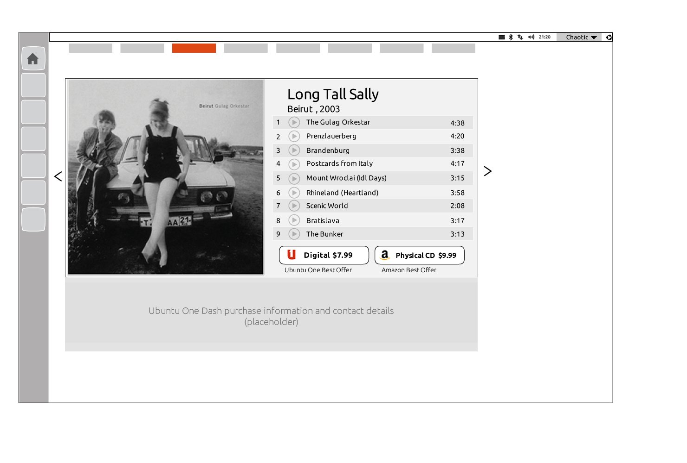
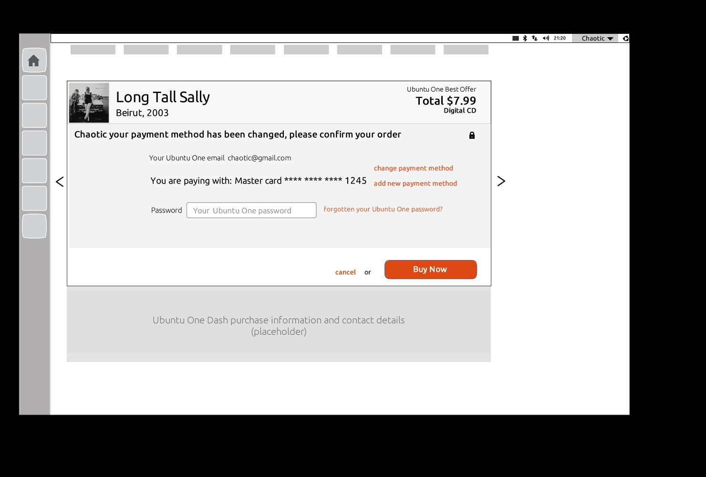

Purchase Flow Screens
From Preview
to "Buy Now"
The purchase flow moved users from browsing content in the Dash, through a preview screen showing the full track listing and price comparison, to a streamlined payment confirmation — all without opening a browser.

Content preview — full track listing with two purchase options: Ubuntu One digital ($7.99) and Amazon physical CD ($9.99). Best offer labelling surfaces the Ubuntu One advantage.

Payment confirmation — personalised to the user (Chaotic), showing saved Mastercard, password entry, and a single "Buy Now" CTA. Change/add payment method links handle edge cases.

Ubuntu Dash Music scope — The Beatles' Yellow Submarine / Eleanor Rigby album with "Download £7.99" (Ubuntu One) and "£9.99 Audio CD" (Amazon) purchase options surfaced directly in the content view.

Ubuntu Pay in use — browsing and buying The Beatles without ever leaving the OS.